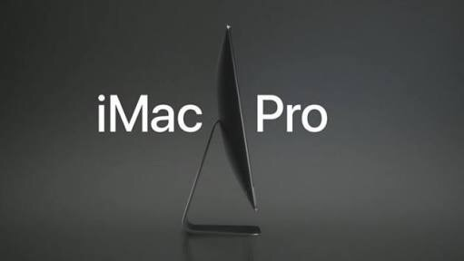

Artículos Relacionados
IOS 11

La WWDC 2017, este año no fue la excepción para presentarnos la llegada del nuevo IOS 11, este nuevo sistema operativo viene con grandes novedades. Esta nueva actualización, la tendremos disponible para otoño de este año, se han lanzado ya BETA de IOS 11 para los desarrolladores.
IMAC PRO
Apple ha presentado uno de sus dispositivos de más alta gama que le ha llamado iMac Pro, también en la WWDC 2017 presento renovación del MacBook, MacBook Pro, iMac, y iMac Pro.
iPhone 8: ¿Diseño final? Olixar muestra sus fundas para el iPhone8
Año tras año año, solemos ver al inicio de las ventas y, o reservas de fundas para los siguientes modelos de iPhone, antes de que estos se presenten de forma oficial. Pero en este caso la compañía de fundas y accesorios para los dispositivos móviles Olixar se adelanto bastante, dejando ver las fundas y protectores de pantalla para un nuevo modelo de iPhone.